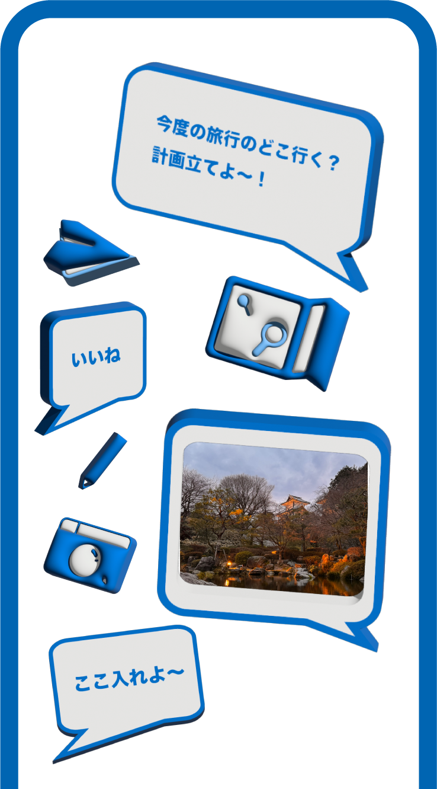
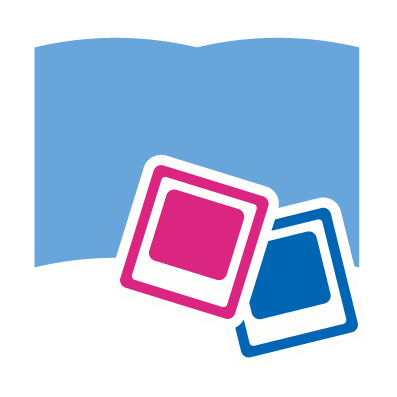
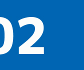

Trip Note
旅の計画も、思い出も、Trip Noteで。

旅の計画から思い出まで、ひとつに。
旅は帰ってからも続く…
旅行の情報収集だけで終わらない
計画も、記録も、思い出もTrip Noteひとつで
-
旅のしおり
旅行日程や訪問スポットを登録して、 オリジナルの旅のしおりを作成。 旅行中もスケジュールを簡単に確認。
-
おすすめ検索
編集部や自治体監修のモデルルートや、 ユーザーおすすめの旅行記・スポットを検索。 気になる場所は旅のしおりやお気に入りへ追加。
-
旅行記録
旅行中に撮影した写真やメモを記録。 公開範囲も自由に設定でき、 旅行仲間との共有も簡単。
-
アルバム

旅行ごとに写真やメモを整理して、 アルバムとしてまとめて保存。 いつでも旅の思い出を振り返れます。
-
みんなにシェア
旅のしおりや旅行記を、 様々な方法で共有。
旅行前も旅行後もみんなで楽しめます。 -
お気に入り登録
旅行記やモデルルート、 気になるスポットをお気に入りへ保存。 自分だけの旅リストを作れます。
-
メールアドレスを登録し、
アカウントを作成します。 -

メール内のリンクをタップし、
登録を確認します。 -
プロフィールを設定して、
利用を開始します。
Q1 登録しないと使えませんか？
旅のしおりの作成や一部モデルルートの閲覧は、 登録なしでもご利用いただけます。 アルバム機能やお気に入り登録など、 一部機能は無料会員登録後にご利用いただけます。
Q2 無料で使えますか？
基本機能は無料でご利用いただけます。
Q3 オフラインでも使えますか？
保存した旅のしおりは、 オフラインでも閲覧できます。 電波の届きにくい場所でも、 旅行のスケジュールを確認できます。
Q4 旅のしおりは共有できますか？
URLやQRコードなどを利用して、 旅のしおりを共有できます。
Q5 公開範囲は選べますか？
旅行記録は公開範囲を設定できます。
Q6 お気に入り登録はできますか？
気になる旅行記やスポットを お気に入りに保存できます。